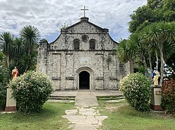
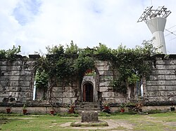

History of Guimaras
From Himal-os to the Province of Guimaras — a rich island story.


Guimaras, officially known as the Province of Guimaras, is an island province in the Philippines located in the Western Visayas region. Its capital is Jordan, while Buenavista is the largest municipality. The province lies in the Panay Gulf, between the islands of Panay and Negros, and is part of the Metro Iloilo–Guimaras area. It is composed mainly of Guimaras Island along with several smaller surrounding islets such as Inampulugan, Guiwanon, Panobolon, Natunga, and Nadulao.
Historically, Guimaras was formerly known as Himal-os and became significant as early as 1521 when Spanish explorers passed near the island. Over time, it became known for its rich natural resources, skilled people, and beautiful environment. The island developed through agriculture, fishing, and trade, which became the foundation of its local economy.
Influenced by Spanish and later American rule, Guimaras gradually evolved from small villages into organized municipalities. It was once a sub-province of Iloilo before gaining full independence and becoming a regular province on May 22, 1992.
Today, Guimaras continues to grow and develop while maintaining its reputation for natural beauty and abundant resources.